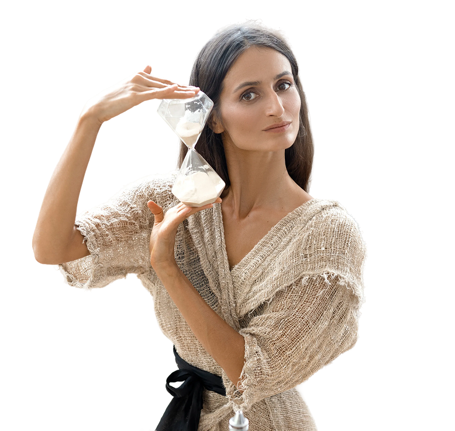

Постоянная жажда и сухость во рту
Почки работают в усиленном режиме, чтобы вывести лишний сахар — и заодно вымывают влагу из слизистых по всему телу, включая кишечник.
Гид от Наташи Сведовой
— и почему Candida любит именно тебя —
Ты думаешь, сахар — это просто про вес и кариес. На самом деле сахар запускает целую цепочку: воспаление слизистой → разрастание Candida → разрушение кишечного барьера → сбой во всём организме. И происходит это тихо. Без боли. Годами.
Узнать, что происходит с организмом
Большинство узнают о проблеме с сахаром случайно — на плановом анализе. Но тело сигнализирует гораздо раньше. Просто мы не умеем это читать.
Почки работают в усиленном режиме, чтобы вывести лишний сахар — и заодно вымывают влагу из слизистых по всему телу, включая кишечник.
Особенно после сладкого. Сахар скачет — энергия падает.
Мозг на сахарных качелях. Концентрация падает резко.
Это не слабость характера. Это грибок Candida albicans на слизистой кишечника требует своего питания.
Тело пытается вывести лишнюю глюкозу через почки.
Высокий сахар нарушает иммунный ответ, кровообращение и способность слизистых тканей к регенерации.
Акантоз нигриканс — классический признак инсулинорезистентности.
Candida питается глюкозой. Высокий сахар — идеальная среда для её разрастания.
Нервы страдают от хронически высокого сахара.
Анализ на глюкозу натощак может быть в норме. Но это не значит, что всё хорошо. Постпрандиальный сахар — то, о чём врачи редко говорят на приёме.
Как проверить дома
Глюкометр стоит 500–800 рублей. Измерь сахар до еды — и через час после.
Если выше — это проблема, которую стандартный анализ натощак не покажет.
Каждый скачок сахара — пир для Candida и повод для дополнительного воспаления слизистой. Именно поэтому люди с нестабильным сахаром жалуются на постоянное вздутие — это не просто пищеварение. Это признак раздражённой слизистой, которая нуждается в восстановлении.
Процесс называется гликация. И это буквально то, как сахар делает тебя старше.
Молекулы сахара прикрепляются к молекулам коллагена и делают их жёсткими. Морщины. Потеря упругости. Тусклая кожа.
Именно поэтому диабетики теряют зрение. Но субклиническая гликация портит зрение у всех — просто медленнее.
Сахар повреждает стенки сосудов. Начинается атеросклероз. Кожа получает меньше питания — стареет быстрее.
Клетки теряют энергию. Регенерация замедляется.
Ты убрала сахарницу со стола. Отказалась от конфет. И думаешь, что всё. Нет.
Гликемический индекс белых макарон — 65–70. Это почти как сахар.
Большинство видов хлеба содержит до 5–7 г сахара на 100 г плюс добавленный сахар для вкуса.
Лактоза — молочный сахар. Плюс производители добавляют фруктозу в обезжиренные продукты.
До 25 г сахара на 100 г.
Без клетчатки фруктоза идёт прямо в печень. Стакан апельсинового сока = 6 чайных ложек сахара.
Финики, мёд, кокосовый сахар, сироп агавы — всё это фруктоза. Печень не видит разницы.
Этанол в печени ведёт себя похоже на сахар — стимулирует синтез жиров и создаёт инсулинорезистентность.
Даже без добавленного сахара мюсли содержат до 20 г сахара из сухофруктов.
Гликемический индекс выше, чем у белого хлеба.
Скрытый сахар — любимая еда Candida на слизистой кишечника. Человек думает, что питается правильно, а внутри идёт непрекращающийся пир, который истончает кишечный барьер. Именно поэтому при правильном питании не уходит вздутие и не прибавляется энергия.
Многие удивляются — я не ем сладкое, но полнею. Или: я не пью много, но печень страдает. Вот объяснение.
Алкоголь и фруктоза перерабатываются в печени схожим путём — через фруктокиназу. Оба стимулируют синтез жиров в печени. Оба при систематическом употреблении приводят к жировому гепатозу. Оба повышают уровень мочевой кислоты — отсюда подагра у любителей пива. Оба нарушают работу инсулина.
Один вечер с вином — и грибок Candida получает преимущество на несколько дней, пока слизистая пытается восстановиться. Именно поэтому после праздников так тянет к сладкому — Candida восстанавливает свою популяцию на ослабленном барьере.
Это самое неудобное, что я скажу в этом гайде. Люди, которые питаются правильно, часто имеют те же проблемы с сахаром.
Концентрированная фруктоза без клетчатки. Печень получает удар с утра.
До 40% фруктозы. Для печени и для Candida разницы нет.
5 фиников = 30 г сахара.
5 порций в день — это много фруктозы, особенно для уже раздражённой слизистой.
Протеиновые батончики, изотоники — часто с огромным количеством добавленного сахара.
Даже без сахара — быстрые углеводы с высоким ГИ.
ЗОЖники с ослабленной слизистой — отдельная история. Человек ест правильно, занимается спортом — но энергии нет, вес стоит, кожа тусклая. Раздражённая слизистая хуже усваивает питательные вещества, даже самые качественные.
Избыток сахара создаёт раздражающую, кислую среду на слизистой. В этой среде расцветает Candida albicans — грибок, который есть у большинства людей, но обычно под контролем. Candida выделяет токсины, которые дополнительно повреждают слизистую. Повреждённый барьер пропускает непереваренные частицы и токсины в кровоток. Организм реагирует хроническим воспалением, усвоение питательных веществ ухудшается. Нехватка питательных веществ и воспаление усиливают тягу к сахару — человек ест больше сладкого.
Круг замкнулся.Выйти из него одной диетой практически невозможно.
Именно поэтому просто убрать сахар не работает для многих людей. Тяга возвращается. Потому что слизистая остаётся повреждённой, а Candida продолжает посылать сигналы в мозг: дай нам поесть.
Личная история
Я сама прошла через всё, что описала в этом гайде. И даже хуже.
У меня была настоящая сахарная зависимость. Печеньки, тортики, хлеб — и я не могла остановиться. При этом искренне старалась питаться правильно. Увлекалась аюрведой, индийской кухней — там даже в суп из чечевицы принято добавлять щепотку сахара, для баланса пяти вкусов.
Результат? Прыщи. Газы. Кандида, которая была у меня с подросткового возраста, расцвела до масштабов катастрофы — а вместе с ней разрушалась и слизистая моего кишечника, хотя тогда я об этом даже не думала.
Я взяла себя в руки и решила отказаться от сахара силой воли.
Получилось?
Вообще не получилось.
Потому что я боролась со следствием. А причина — повреждённая слизистая и разросшаяся Candida — никуда не делась.
Пришлось идти по шагам. Сначала — мягкое восстановление слизистой кишечника. Потом — работа с Candida. И только тогда тяга к сахару ушла сама. Без усилий. Без срывов.
Я вышла из замкнутого круга пищевой зависимости. Началась свобода.
И вместе с ней ушло то, что я никогда не связывала с сахаром: хронический гайморит, хронический бронхит, гастрит, панкреатит, синдром раздражённого кишечника.
Это было 13 лет назад. С тех пор я делюсь этим путём с другими — и открыла одну из старейших онлайн-школ здоровья в России.
Один вопрос к тебе
Что из этого было про тебя? Тяга к сладкому, которую не победить? Вздутие? Усталость? Кожа? Вес, который стоит?
Если хотя бы один пункт — твой, значит слизистая твоего кишечника уже нуждается во внимании, а Candida, возможно, уже разрослась сильнее, чем ты думаешь. Выйти из этого круга одной силой воли не получится. Я знаю это точно.
В августе в пространстве «Ведание»
Будем работать именно с тем, о чём ты только что прочитала: восстановление слизистой, баланс микрофлоры, мягкая работа с Candida — последовательно, системно, с сопровождением.
Не чтобы продать тебе очередную диету. А чтобы провести тебя по тем же шагам, которые прошла я — последовательно, мягко, с результатом.
Буду рада видеть тебя там.
Перейти в пространство «Ведание»